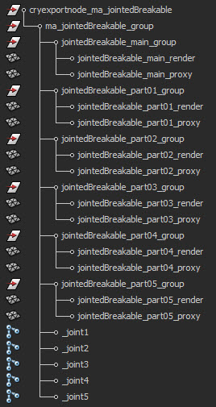

Example Assets
Object setup in Maya for a simple jointed breakable
- Once you cut your object into several pieces, you need to identify which one will be the static remaining piece when the joints get broken. This is your base piece and becomes the parent render mesh for your hierarchy setup which is a child of your export node. Give it a unique nodename and enter "mass=0" and "entity" in its UDP's. Create LOD's and collision geometry for it. Center the pivot to the export dummy helper and make sure that it does not have any transformations applied.
- Link all other pieces as children to this static piece and give them a mass in their UDP's (depending on their weight in kg, i.e. "mass=15" meaning the object has a mass of 15 kilograms). Give the pieces unique nodenames and create LOD's and collision geometry for them. Make sure the LOD's line up perfectly with all other LOD's on each level so that no gaps are visible. Only create LOD´s for pieces that have more then 100 triangles. Center the pivots of all objects to your export node and make sure they do not have any transformations applied. For information on how to add UDPs, please refer to the UDP Settings section.
- Create one joint for each piece and call it _jointxx (xx=00,01,02,...). Set a limit to your joints (use 500 for testing, for more explanation in detail refer to joint values). Make sure the joints intersect with only one piece of collision geometry (connecting this piece to the world, making the joint red in debug game mode) or two different pieces of collision geometry (interconnecting those two pieces, making the joint light grey in debug game mode). The joints must not be scaled and should not be rotated.

- Export your object by adding the cryexportnode with "Export File per Node" enabled and "Merge All Nodes" disabled.
- Place the object as a brush in Sandbox and shoot it. It should now break.
Setup in Sandbox
Not much else is really needed for setup in Sandbox. You may use objects as a Brush, BasicEntity or Breakable Object.
Debugging
Apply enough force to the object to break it.
p_draw_helpers
Same as p_draw_helpers_num, but encoded in letters
Usage [Entity_Types]_[Helper_Types] - [t|s|r|R|l|i|g|a|y|e]_[g|c|b|l|t(#)]
Entity Types:
t - show terrain
s - show static entities
r - show sleeping rigid bodies
R - show active rigid bodies
l - show living entities
i - show independent entities
g - show triggers
a - show areas
y - show rays in RayWorldIntersection
e - show explosion occlusion maps
Helper Types
g - show geometry
c - show contact points
b - show bounding boxes
l - show tetrahedra lattices for breakable objects
j - show structural joints (will force translucency on the main geometry)
t(#) - show bounding volume trees up to the level #
f(#) - only show geometries with this bit flag set (multiple f's stack)
Example: p_draw_helpers larRis_g - show geometry for static, sleeping, active, independent entities and areas